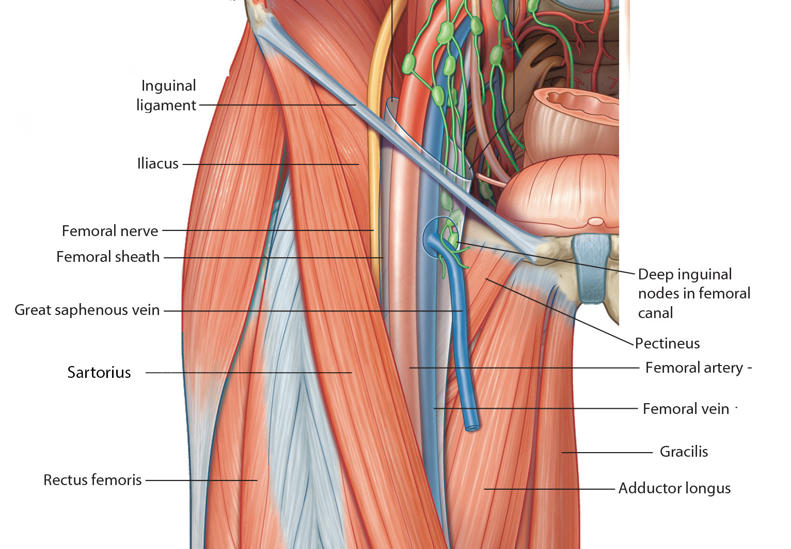

Anterior Abdominal Wall: Lab 4 - Page 4 of 6
Now let us turn our attention to the structures tha pass under and near the inguinal ligament.
| Add the major structures passing under the inguinal ligament. |
What are these structures? |
|
|
Femoral nerve, artery,vein and lymphatic drainage. (NAVL- Lateral to medial description of the contents of the femoral triangle) |
|
| These structures occupy the femoral triangle. |
The femoral artery, femoral vein and lymphatics are encased by the femoral sheath.
What are the boundaries of the femoral triangle? |
|
|
Superiorly: The inguinal ligament. Medially: The medial border of Adductor longus muscle. Laterally: The medial border of the Sartorius muscle. |
|
What is the clinical significance of this triangle? |
|
|
|